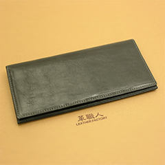

|
追求真正的堅持，這就是我們的答案 |
GOVERNOR II 長夾 |

|
❶ 新一代的的風格，細緻作工更講究 ❷ 俐落灑脫的作風，就是お洒落(おしゃれ) ♪ ❸ 縱列卡片夾層，一目了然 ! ❹ 鈔票夾層外側，也是收納重點 ! ❺ 就是要俐落有型 ♪ |
| ❶新一代的的風格，細緻作工更講究 | ❷俐落灑脫的作風，就是お洒落(おしゃれ) ♪ |
| 用心欣賞新一代Governor II。皮夾整體縫上縫邊，給人簡潔俐落的印象。仔細看看縫邊，便可發現我們的用心。皮革反摺處、皮革與布料的接縫都先黏好，再縫上縫邊補強。此外，縫邊尾端藏入卡片夾層內，職人的用心可見一斑。 | 鈔票夾層內的立體折邊(マチ)，大大提升收納能力。此外，內部附有隔層，可分類各種鈔票。刷地一聲取出並翻開皮夾，抽出鈔票，流暢的漂亮動作，這是只有長夾才能展現的華麗動作。 |

|
|
| ❸縱列卡片夾層，一目了然 ! | ❹鈔票夾層外側，也是收納重點 ! |
| 縱向排列的卡片夾層寬度較寬，抽取卡片相對容易。即使層層收納了許多卡片，仍能輕鬆抽取。此側內部還有兩層袖口袋，可將收據或證件收納在此。 | 此外，我們也在鈔票夾層的外側設計了一層袖口袋及4個卡片夾層，全數共有11個卡片夾層及3個袖口袋，再也不需煩惱多餘卡片或個人證件收納的問題了。 |
| ❺就是要俐落有型♪ | |
|
Governor II無零錢袋。要有零錢袋，就一定得用上拉鍊，但拉鍊會增加厚度，長夾就變得不俐落了。若您想一併添購零錢包，可選擇同色系的款式，呈現整體感。但若選擇使用不同顏色，兩相搭配也有不同風情，讓人有耳目一新的發想。 (同系列皮革 >> ULTIMATE 零錢包) |
|

|
日本國產牛原皮使用
「栃木皮革」-日本最高峰的皮革製造商
本產品採用日本最高峰的皮革製造商「栃木皮革」所生產之皮革，堅持使用天然素材。使用日本國產牛原皮，花費一個半月以單寧酸鞣皮。此外，「栃木皮革」擁有超過20個獨家工法，以獨特製法做出講究的皮革。 本產品使用浸漬植物單寧酸的鞣皮，此種牛油皮製作完成後富含動物性油脂。成品柔軟滑順。為展現皮革原始風情，表面幾乎不再上色，保留皮革原色。因此皮革表現可見皺褶、血管紋路、細微傷痕等細紋，由自然紋路更可看出皮革本身的優異程度。 使用時間越久越有光澤，也會產生煙燻般的質地。彷彿能吸附在手上的柔軟觸感，使用越久越有個人獨特的印記，皮革的變化令人期待。對於皮革愛好者，此種特性更能讓人感受到絕佳的樂趣。 |
|
皮夾的縫線，與皮革顏色稍微不同且設計上也很俐落，更能抓住他人的目光。 縫線並不是為了裝飾才縫上的，不管再怎麼細心製作，總會有結構較弱的部分，因此便用縫線補強，讓皮夾更為耐用。 另外，皮革與縫線顏色不同，不僅令人眼睛為之一亮，職人縫線時也不容許出錯。這就是革職人在堅持之下，製作出的夢幻逸品 （職人 - 橋本博道） |

|
||||||||||
|
[提醒您] |
||||||||||
|
|
||||||||||

|
焦糖色 (GV008CA) |
棕色 (GV008BR) |

黑色 (GV008BK) |